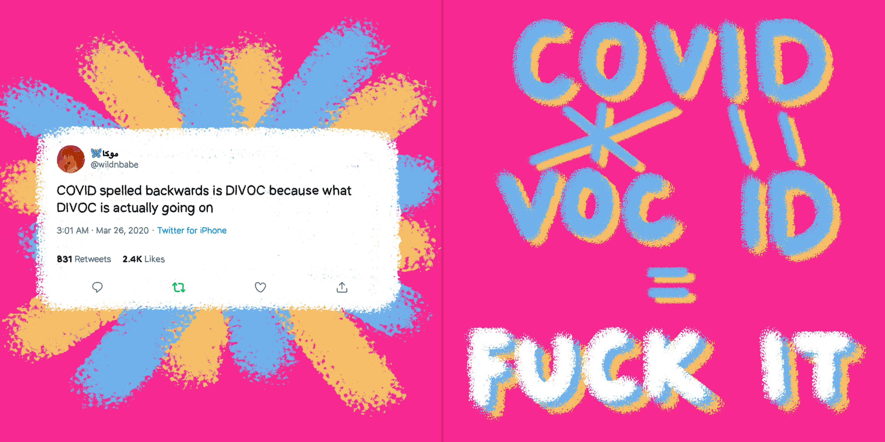
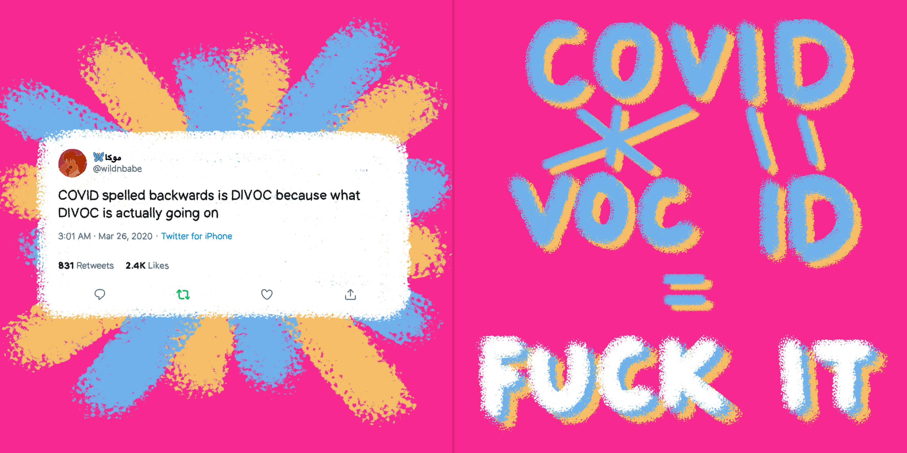
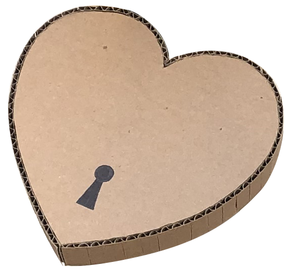

Visit Website

The Rat Count — (Web Design)
The Rat Count is an ongoing competition between three roommates living in the East Village. Whenever one of us spots a rat during our duty of throwing the trash, we would add to the tally count. This webpage translates the tally count in a visual form to represent the amount of rats we've all spotted since we moved in.
The Rat Count is an ongoing competition between three roommates living in the East Village. Whenever one of us spots a rat during our duty of throwing the trash, we would add to the tally count. This webpage translates the tally count in a visual form to represent the amount of rats we've all spotted since we moved in.
Visit Website
Virtual Etch A Sketch — (Web Design)
Inspired by the childhood drawing toy Etch A Sketch, this webpage brings elements of that toy to the virtual world. Through basic JavaScript, the site allows users to generate smileys, choose the color, remove smileys, etc.
Inspired by the childhood drawing toy Etch A Sketch, this webpage brings elements of that toy to the virtual world. Through basic JavaScript, the site allows users to generate smileys, choose the color, remove smileys, etc.
Visit Website
Draw the Clouds — (Web Design)
Draw the Clouds is a webpage that replicates the activity of cloud sighting and making shapes out of randomness, also referred to as cloud pareidolia. This lighthearted project was created during quarantine to bring back the feeling that we missed of being outside with nature.
Draw the Clouds is a webpage that replicates the activity of cloud sighting and making shapes out of randomness, also referred to as cloud pareidolia. This lighthearted project was created during quarantine to bring back the feeling that we missed of being outside with nature.

Album Redesign — (Motion Graphics)
Choosing from two different existing albums, I redesigned the album cover and created a looping video that would be used as the background in a Spotify player. This project allowed me to know how to express music in a visual sense.
Choosing from two different existing albums, I redesigned the album cover and created a looping video that would be used as the background in a Spotify player. This project allowed me to know how to express music in a visual sense.
Wikibook — (Book Design)
The Wikibook project takes a chosen Wikipedia page and uses the content to design a book. I chose the Wikipedia page 'Moon Landing Conspiracy Theories' because it's something I think about from time to time.
The Wikibook project takes a chosen Wikipedia page and uses the content to design a book. I chose the Wikipedia page 'Moon Landing Conspiracy Theories' because it's something I think about from time to time.


Manifesto Poster — (Graphic Design)
This project takes from a manifesto as a starting point in the creation of visual posters limited to using letterforms. The result is two visually different manifesto posters and one event poster to promote a virtual event regarding the manifesto.
This project takes from a manifesto as a starting point in the creation of visual posters limited to using letterforms. The result is two visually different manifesto posters and one event poster to promote a virtual event regarding the manifesto.
 

Covid Twitter Diaries — (Illustration)
During the beginning of the pandemic, I resorted to Twitter to entertain myself with all the satirical tweets people made regarding COVID-19. I started compiling all of the ones I found interesting and created illustrations for each of them.
During the beginning of the pandemic, I resorted to Twitter to entertain myself with all the satirical tweets people made regarding COVID-19. I started compiling all of the ones I found interesting and created illustrations for each of them.

Cardboard Locks — (Sculpture)
In this project, I explored on how to intervene with an existing space by creating an assemblage using recycled material. I made huge locks out of cardboard that interlocked a fence with an interesting structure in Greenwich Village.
In this project, I explored on how to intervene with an existing space by creating an assemblage using recycled material. I made huge locks out of cardboard that interlocked a fence with an interesting structure in Greenwich Village.